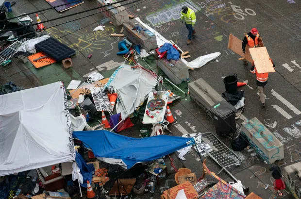

CHAZ LARP shut down
NOTE: Originally written on July 2nd, posted here.
Technically not BC news, but right across the border in Seattle, Washington we had that hilarious "anarchist zone," pop up. Well it got considerably less funny as time wore on, due to the massive surge in violent crime and burglary. BTW I normally tell you guys not to read the links, but this story is actually pretty hilarious, so in this case you should click on that link.
The Sun UK:
TDC_ARTICLE_START
Mayor Jenny Durkan threatened to end the six-block cop-free zone for over a week and eventually issued an executive order to boot demonstrators from it.
The emergency order, which took effect early on Wednesday morning, directed all residents to vacate the area.
At least 31 people were arrested for "failure to disperse, obstruction, assault, and unlawful weapon possession, police said.
The order stated that the Seattle Police Department received various reports of “narcotics use and violent crime, including rape, robbery, assault, and increased gang activity” within CHOP.
From June 2 to June 30, there was also a staggering 525 percent increase in violent crime compared to the same period last year.
TDC_ARTICLE_STOP
Hilariously, they also noticed an enormous surge in firearms and other weapons. Which is interesting because I was under the impression that these people were big on gun control. I guess that’s just for you goy.

Two different fatal shootings resulted in the deaths of two teenagers, and the serious injuring of a third. All of them were black, although make no mistake, these people would have happily murdered white people as well, just to in before someone trying to "own the liberals," with an implicitly anti-white talking point.
Regardless, CHAZ, the Central Hill Autonomous Zone, was one of the biggest LARPs, or Live Action RolePlays, in human history. The idea of establishing an autonomous zone separate from the parasitical US government is an appealing one for honest, hardworking, and actually productive Americans. Normal white people would have an autonomous zone be constantly attacked with drone strikes, while the entire media complex, judiciary, military, and corporate positions of power would happily condemn them, and call for their deaths, and then public show trials for treason and sedition. Everybody knows that Antifa and BLM are nothing more than the shock troops of the Privileged, the unofficial army that exists to do illegal things that the state and police can't get away with, and as a result, they were allowed to LARP around for a month. If CHAZ had not become such a bad optics meme, they would still be going, but it's worth mentioning the utter ease with which the police interrupted the shit show, adding further absurdity to the LARPing. When the police were given the order to close up CHAZ, CHAZ got closed in about half an hour.
Of course, you would never in a million years set up an autonomous zone in a city, let alone the downtown of a city, for the very obvious reason that you simply cannot grow enough food to feed the populace in such an area. You also cannot generate electricity in such a small area, at least to the extent that you require. I’m sure there are tons of other logistical problems, but those are two non-starters. CHAZ was an "autonomous zone," where the antifa's "rebelling against the system," used Mastercards to purchase delivery pizza from supposedly another country. Meanwhile Mastercard and VISA collude to deny Gab, an online free speech platform, the right to engage in online financial transactions.
CHAZ lasted from June 2 to June 30.